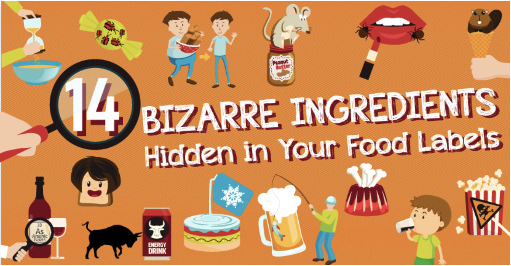

Hidden Ingredients in Junk Food
Many junk foods contain hidden ingredients that can negatively affect your health. These ingredients are often added to improve taste, texture, color, or shelf life, but come with potential health risks.These additives are not always easily understood by the average consumer and are usually buried in long ingredient lists. Some ingredients can cause allergic reactions, disrupt hormones, or increase the risk of chronic diseases. Unfortunately, food companies may use misleading labels or marketing terms like "natural flavors" to mask the use of synthetic chemicals and preservatives.
Some ingredients can cause allergic reactions, disrupt hormones, or increase the risk of chronic diseases. Unfortunately, food companies may use misleading labels or marketing terms like "natural flavors" to mask the use of synthetic chemicals and preservatives.
- Monosodium Glutamate (MSG) – Used to enhance flavor but may trigger headaches and nausea in sensitive individuals.
- High Fructose Corn Syrup – A sweetener linked to obesity and liver issues.
- Artificial Dyes (Red 40, Yellow 5, etc.) – Found in candies and snacks; some are linked to hyperactivity in children.
- Trans Fats – Used in fried and baked goods; increases bad cholesterol and risk of heart disease.
- Sodium Nitrate/Nitrite – Preservatives used in processed meats that may be linked to cancer.
Reading food labels carefully and choosing fresh, whole foods can help reduce the intake of these hidden ingredients. Being aware of what's really in your food is the first step toward a healthier lifestyle.